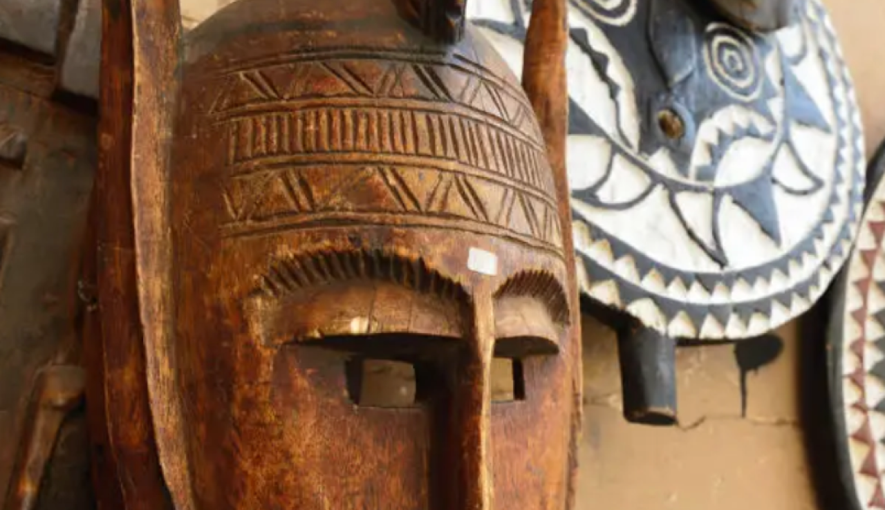

Patrimoine
L'essence de l'art premier africain
La Galerie OBA capture l'âme profonde des traditions
africaines à travers une collection unique de masques ancestraux. Chaque pièce représente
un dialogue silencieux entre l'histoire et l'expression artistique.
Patrimoine

Trésors masqués
Un voyage visuel à travers les âmes sculptées d'Afrique